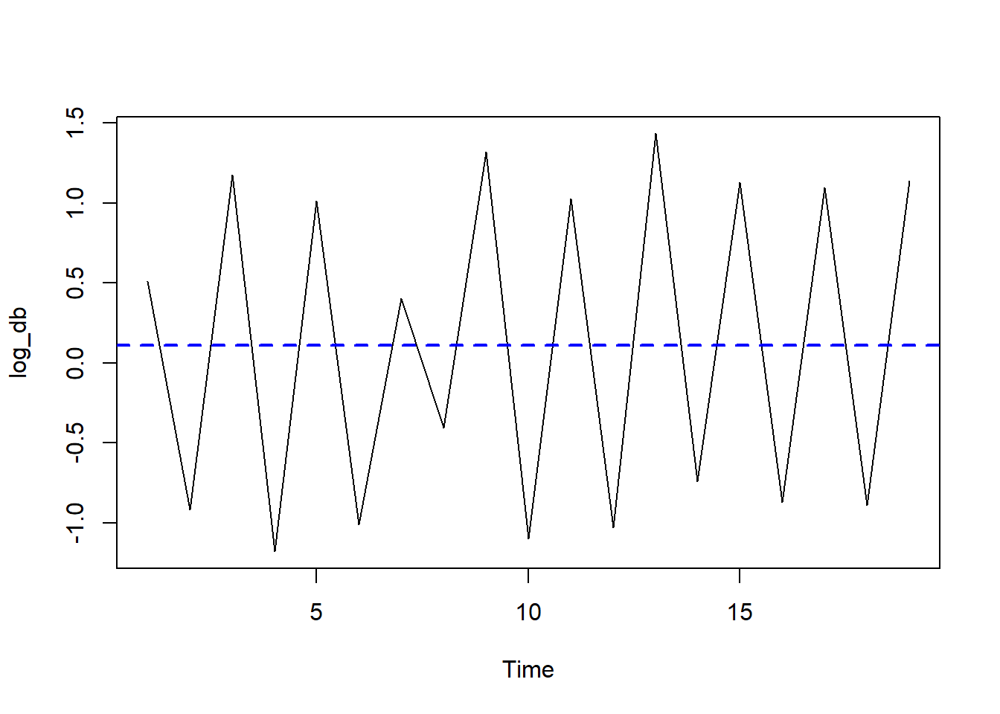
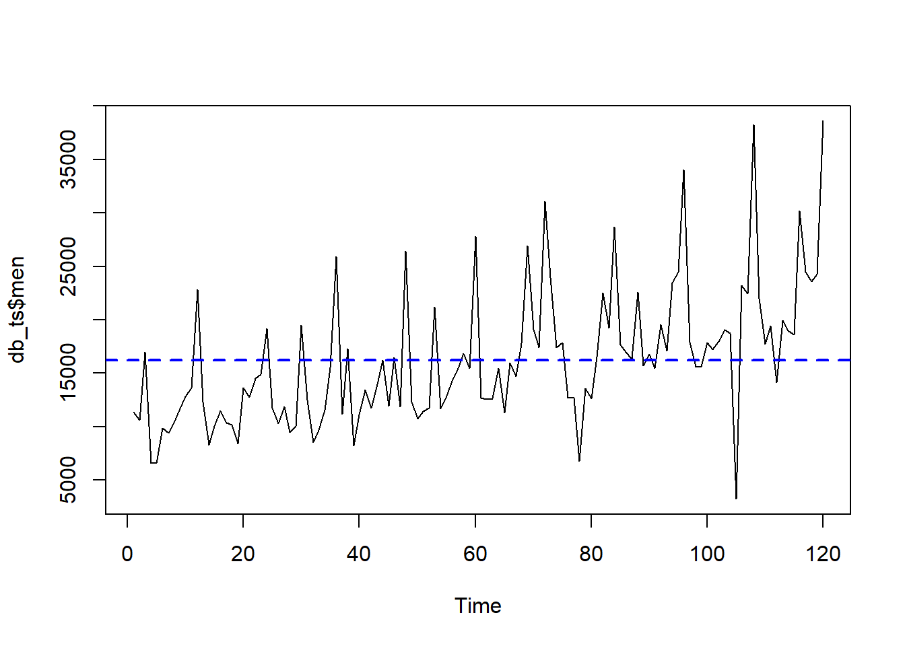

✓ Pacotes de séries temporais carregados!Lista 7: Séries Temporais (ARIMA)
üì¶ Pacotes
üîç O que √© ARIMA?
ARIMA = AutoRegressive Integrated Moving Average
Modelo para séries temporais que combina três componentes:
AR (p) - AutoRegressivo - Usa valores passados da série - “O hoje depende do ontem” - p = número de defasagens (lags)
I (d) - Integrado - Número de diferenças para tornar série estacionária - d = 0 (estacionária), d = 1 (1ª diferença), etc.
MA (q) - Média Móvel - Usa erros passados da série - “Correções baseadas em erros anteriores” - q = número de termos de erro
Notação: ARIMA(p, d, q)
üßπ Prepara√ß√£o do Ambiente
# Limpar ambiente
rm(list = ls(all.names = TRUE))
gc() used (Mb) gc trigger (Mb) max used (Mb)
Ncells 1682340 89.9 3138441 167.7 2478994 132.4
Vcells 2892755 22.1 8388608 64.0 4629138 35.4# Configurações
options(scipen = 999, stringsAsFactors = FALSE)
set.seed(42)üì• Parte 1: Estacionaridade (Dados de Cigarros)
Conceito Fundamental: Estacionaridade
Uma série é estacionária quando: - Média constante ao longo do tempo - Variância constante - Autocorrelação depende apenas da defasagem, não do tempo
Por que importa? Modelos ARIMA requerem estacionaridade!
Carregar Dados
db_cigarro <- read.spss("CigarrosROD_1.sav", to.data.frame = TRUE)
glimpse(db_cigarro)Rows: 20
Columns: 2
$ Dia <dbl> 1, 2, 3, 4, 5, 6, 7, 8, 9, 10, 11, 12, 13, 14, 15, 16, 17,…
$ cigarrosROD <dbl> 6, 10, 4, 13, 4, 11, 4, 6, 4, 15, 5, 14, 5, 21, 10, 31, 13…Inspeção Visual
# Média da série
media_cigarros <- mean(db_cigarro$cigarrosROD)
# Plot simples
plot.ts(db_cigarro$cigarrosROD,
main = "Consumo de Cigarros ao Longo do Tempo",
ylab = "Cigarros por Dia", xlab = "Tempo")
abline(h = media_cigarros, col = "blue", lty = 2, lwd = 2)
legend("topright", legend = "Média", col = "blue", lty = 2, lwd = 2)
üìä Diagn√≥stico Visual
Valores desviam bastante da média → Série NÃO é estacionária
Observe tendência de queda ao longo do tempo.
Teste Augmented Dickey-Fuller (ADF)
Teste ADF
H₀: Série é não-estacionária (possui raiz unitária)
H₁: Série é estacionária
Decisão: - p < 0.05 → Rejeita H₀ → Estacionária ✓ - p > 0.05 → Não rejeita H₀ → Não-estacionária ✗
adf.test(db_cigarro$cigarrosROD)
Augmented Dickey-Fuller Test
data: db_cigarro$cigarrosROD
Dickey-Fuller = -0.38979, Lag order = 2, p-value = 0.9797
alternative hypothesis: stationary
Resultado
p > 0.05 → Série não é estacionária
Precisamos transformá-la!
Função de Autocorrelação (ACF)
# Análise completa
ggtsdisplay(db_cigarro$cigarrosROD,
main = "Diagnóstico da Série Original")
üîç Interpretando ACF
Barras acima da linha tracejada = Autocorrelação significativa
Padrão decrescente lento = Tendência (não-estacionária)
Lags candidatos: Onde ACF cruza o limiar pela primeira vez
Teste de Ljung-Box
# Calcular ACF
acf_valores <- acf(db_cigarro$cigarrosROD, plot = FALSE)
# Testar múltiplos lags
max_lags <- min(20, length(acf_valores$acf) - 1)
resultados <- data.frame(
Lag = 1:max_lags,
P_Value = sapply(1:max_lags, function(lag) {
Box.test(acf_valores$acf, lag = lag, type = "Ljung-Box")$p.value
})
)
# Destacar significativos
resultados$Sig <- ifelse(resultados$P_Value < 0.05, "✓", "")
kable(head(resultados, 10), digits = 4,
caption = "Teste de Ljung-Box por Lag")| Lag | P_Value | Sig |
|---|---|---|
| 1 | 0.9410 | |
| 2 | 0.0166 | ✓ |
| 3 | 0.0364 | ✓ |
| 4 | 0.0200 | ✓ |
| 5 | 0.0237 | ✓ |
| 6 | 0.0359 | ✓ |
| 7 | 0.0198 | ✓ |
| 8 | 0.0337 | ✓ |
| 9 | 0.0101 | ✓ |
| 10 | 0.0151 | ✓ |
Transformação: Diferenciação
# Determinar número ótimo de diferenças
n_diffs <- ndiffs(db_cigarro$cigarrosROD)
cat("Diferenças necessárias:", n_diffs, "\n")Diferenças necessárias: 1 # Aplicar diferenciação
serie_diff <- diff(db_cigarro$cigarrosROD, differences = n_diffs)
# Verificar estacionaridade
adf.test(serie_diff)
Augmented Dickey-Fuller Test
data: serie_diff
Dickey-Fuller = -4.1249, Lag order = 2, p-value = 0.0189
alternative hypothesis: stationaryVisualização Pós-Transformação
# Plot da série diferenciada
media_diff <- mean(serie_diff)
plot.ts(serie_diff,
main = "Série Após Diferenciação",
ylab = "Diferença", xlab = "Tempo")
abline(h = media_diff, col = "red", lty = 2, lwd = 2)
abline(h = 0, col = "gray", lty = 3)
✓ Série Agora Estacionária!
- Oscila em torno da média (linha vermelha)
- Variância constante
- ADF test significativo (p < 0.05)
üìä Parte 2: Modelagem ARIMA (Dados de Salários)
Carregar Dados
db_salarios <- read.spss("dados series temporais.sav",
to.data.frame = TRUE)
glimpse(db_salarios)Rows: 120
Columns: 11
$ date <dbl> 12818995200, 12821673600, 12824092800, 12826771200, 12829…
$ men <dbl> 11357.92, 10605.95, 16998.57, 6563.75, 6607.69, 9839.00, …
$ women <dbl> 16578.93, 18236.13, 43393.55, 30908.49, 28701.58, 29647.5…
$ horas <dbl> 7978, 8290, 8029, 7752, 8685, 7847, 7881, 8121, 7811, 870…
$ divida <dbl> 73, 88, 65, 85, 74, 87, 79, 72, 83, 111, 74, 105, 66, 59,…
$ idade <dbl> 34, 29, 24, 20, 17, 30, 28, 27, 35, 25, 30, 45, 35, 20, 2…
$ propaganda <dbl> 22294.48, 27426.47, 27978.66, 28949.65, 22642.27, 27210.6…
$ escolaridade <dbl> 20, 20, 26, 22, 21, 23, 22, 20, 15, 20, 16, 29, 22, 28, 2…
$ YEAR_ <dbl> 1989, 1989, 1989, 1989, 1989, 1989, 1989, 1989, 1989, 198…
$ MONTH_ <dbl> 1, 2, 3, 4, 5, 6, 7, 8, 9, 10, 11, 12, 1, 2, 3, 4, 5, 6, …
$ DATE_ <chr> "JAN 1989", "FEB 1989", "MAR 1989", "APR 1989", "MAY 1989…Criar Objeto de Série Temporal
# Salários masculinos como série temporal
ts_men <- ts(db_salarios$men,
frequency = 12, # Mensal
start = c(1989, 1)) # Janeiro de 1989
# Visualização
plot(ts_men, main = "Salários Masculinos (1989-)",
ylab = "Salário", xlab = "Tempo")Plot Sazonal
seasonplot(ts_men,
col = rainbow(12),
year.labels = TRUE,
type = "o", pch = 16,
main = "Padrão Sazonal de Salários")
Diagnóstico da Série
ggtsdisplay(ts_men, main = "Diagnóstico: Salários Masculinos")
üéØ Ajustando Modelos ARIMA
Modelo 1: ARIMA(1,0,0)
modelo_100 <- Arima(db_salarios$men, order = c(1, 0, 0))
summary(modelo_100)Series: db_salarios$men
ARIMA(1,0,0) with non-zero mean
Coefficients:
ar1 mean
0.4461 16358.8539
s.e. 0.0870 934.3313
sigma^2 = 33065905: log likelihood = -1208.22
AIC=2422.43 AICc=2422.64 BIC=2430.79
Training set error measures:
ME RMSE MAE MPE MAPE MASE ACF1
Training set 22.80781 5702.176 4155.971 -13.46047 30.1633 0.8885625 -0.09098277Modelo 2: ARIMA(0,1,0)
modelo_010 <- Arima(db_salarios$men, order = c(0, 1, 0))
summary(modelo_010)Series: db_salarios$men
ARIMA(0,1,0)
sigma^2 = 43555282: log likelihood = -1215.43
AIC=2432.86 AICc=2432.9 BIC=2435.64
Training set error measures:
ME RMSE MAE MPE MAPE MASE ACF1
Training set 227.1925 6572.087 4638.303 -8.641961 31.89164 0.9916869 -0.4271109Modelo 3: Auto ARIMA
auto.arima()
Função que automaticamente seleciona os melhores parâmetros (p, d, q) minimizando AIC/BIC.
# Encontrar melhor modelo
auto.arima(db_salarios$men, trace = TRUE)
ARIMA(2,1,2) with drift : Inf
ARIMA(0,1,0) with drift : 2434.823
ARIMA(1,1,0) with drift : 2412.096
ARIMA(0,1,1) with drift : Inf
ARIMA(0,1,0) : 2432.897
ARIMA(2,1,0) with drift : 2411.86
ARIMA(3,1,0) with drift : 2408.495
ARIMA(4,1,0) with drift : 2407.461
ARIMA(5,1,0) with drift : 2408.674
ARIMA(4,1,1) with drift : Inf
ARIMA(3,1,1) with drift : Inf
ARIMA(5,1,1) with drift : Inf
ARIMA(4,1,0) : 2405.816
ARIMA(3,1,0) : 2406.731
ARIMA(5,1,0) : 2407.075
ARIMA(4,1,1) : 2394.525
ARIMA(3,1,1) : 2392.515
ARIMA(2,1,1) : 2392.416
ARIMA(1,1,1) : 2391.073
ARIMA(0,1,1) : 2393.07
ARIMA(1,1,0) : 2410.255
ARIMA(1,1,2) : 2392.894
ARIMA(0,1,2) : 2391.92
ARIMA(2,1,0) : 2410.02
ARIMA(2,1,2) : Inf
ARIMA(1,1,1) with drift : Inf
Best model: ARIMA(1,1,1) Series: db_salarios$men
ARIMA(1,1,1)
Coefficients:
ar1 ma1
0.2036 -0.9139
s.e. 0.1002 0.0347
sigma^2 = 29737029: log likelihood = -1192.43
AIC=2390.86 AICc=2391.07 BIC=2399.2# Ajustar modelo sugerido
modelo_auto <- auto.arima(db_salarios$men)
summary(modelo_auto)Series: db_salarios$men
ARIMA(1,1,1)
Coefficients:
ar1 ma1
0.2036 -0.9139
s.e. 0.1002 0.0347
sigma^2 = 29737029: log likelihood = -1192.43
AIC=2390.86 AICc=2391.07 BIC=2399.2
Training set error measures:
ME RMSE MAE MPE MAPE MASE
Training set 915.6723 5384.571 3662.003 -5.571742 25.15003 0.7829504
ACF1
Training set -0.04692903Comparação de Modelos
modelos_comp <- data.frame(
Modelo = c("ARIMA(1,0,0)", "ARIMA(0,1,0)", "Auto"),
AIC = c(AIC(modelo_100), AIC(modelo_010), AIC(modelo_auto)),
BIC = c(BIC(modelo_100), BIC(modelo_010), BIC(modelo_auto))
)
modelos_comp <- modelos_comp %>%
mutate(
AIC = round(AIC, 2),
BIC = round(BIC, 2),
Melhor_AIC = ifelse(AIC == min(AIC), "★", ""),
Melhor_BIC = ifelse(BIC == min(BIC), "★", "")
)
kable(modelos_comp, caption = "Comparação de Modelos (★ = melhor)")| Modelo | AIC | BIC | Melhor_AIC | Melhor_BIC |
|---|---|---|---|---|
| ARIMA(1,0,0) | 2422.43 | 2430.79 | ||
| ARIMA(0,1,0) | 2432.86 | 2435.64 | ||
| Auto | 2390.86 | 2399.20 | ★ | ★ |
Visualização: Ajustado vs Real
# Dataframe para plot
df_plot <- data.frame(
Tempo = seq_along(modelo_auto$fitted),
Ajustado = as.numeric(modelo_auto$fitted),
Real = as.numeric(modelo_auto$x)
)
# Gráfico
ggplot(df_plot, aes(x = Tempo)) +
geom_line(aes(y = Real, color = "Real"), linewidth = 1) +
geom_line(aes(y = Ajustado, color = "Ajustado"), linewidth = 1) +
labs(
title = "Modelo ARIMA: Valores Ajustados vs Reais",
x = "Tempo",
y = "Salário",
color = "Série"
) +
scale_color_manual(values = c("Real" = "blue", "Ajustado" = "red")) +
theme_minimal() +
theme(legend.position = "bottom")üîß Modelo com Covariáveis
# Matriz de covariáveis
covars <- as.matrix(db_salarios[, c("horas", "divida", "idade",
"propaganda", "escolaridade")])
# Auto ARIMA com covariáveis
modelo_com_covars <- auto.arima(db_salarios$men, xreg = covars)
summary(modelo_com_covars)Series: db_salarios$men
Regression with ARIMA(1,0,0) errors
Coefficients:
ar1 intercept horas divida idade propaganda escolaridade
0.1968 -23753.966 2.0271 34.5286 342.9908 0.2046 -30.3841
s.e. 0.1000 2752.766 0.2204 20.1900 43.9319 0.0733 41.3101
sigma^2 = 8316739: log likelihood = -1122.71
AIC=2261.43 AICc=2262.72 BIC=2283.73
Training set error measures:
ME RMSE MAE MPE MAPE MASE
Training set -1.571885 2798.499 2100.857 -2.062733 13.69221 0.4491713
ACF1
Training set -0.006183707Coeficientes e Significância
# Teste de coeficientes
test_coef <- coeftest(modelo_com_covars)
# Formatar resultados
resultados <- data.frame(
Variavel = rownames(test_coef),
Coeficiente = round(test_coef[, "Estimate"], 3),
EP = round(test_coef[, "Std. Error"], 3),
z = round(test_coef[, "z value"], 2),
p = round(test_coef[, "Pr(>|z|)"], 4)
) %>%
mutate(Sig = case_when(
p < 0.001 ~ "***",
p < 0.01 ~ "**",
p < 0.05 ~ "*",
TRUE ~ ""
))
kable(resultados, caption = "Coeficientes do Modelo com Covariáveis")| Variavel | Coeficiente | EP | z | p | Sig | |
|---|---|---|---|---|---|---|
| ar1 | ar1 | 0.197 | 0.100 | 1.97 | 0.0490 | * |
| intercept | intercept | -23753.966 | 2752.766 | -8.63 | 0.0000 | *** |
| horas | horas | 2.027 | 0.220 | 9.20 | 0.0000 | *** |
| divida | divida | 34.529 | 20.190 | 1.71 | 0.0872 | |
| idade | idade | 342.991 | 43.932 | 7.81 | 0.0000 | *** |
| propaganda | propaganda | 0.205 | 0.073 | 2.79 | 0.0053 | ** |
| escolaridade | escolaridade | -30.384 | 41.310 | -0.74 | 0.4620 |
üîÆ Previs√µes (Forecasting)
Salários Masculinos: 50 Meses à Frente
# Ajustar modelo
fit_men <- auto.arima(ts_men)
# Prever 50 meses
fcast_men <- forecast(fit_men, h = 50)
# Visualizar
autoplot(fcast_men) +
labs(
title = "Previsão de Salários Masculinos (50 meses)",
x = "Tempo",
y = "Salário"
) +
theme_minimal()
Salários Femininos: Comparação
# Série temporal feminina
ts_women <- ts(db_salarios$women,
frequency = 12,
start = c(1989, 1))
# Modelo e previsão
fit_women <- auto.arima(ts_women)
fcast_women <- forecast(fit_women, h = 50)
# Visualizar
autoplot(fcast_women) +
labs(
title = "Previsão de Salários Femininos (50 meses)",
x = "Tempo",
y = "Salário"
) +
theme_minimal()✅ Diagnóstico de Resíduos
Por que Verificar Resíduos?
Resíduos devem ser ruído branco: - Média zero - Variância constante - Sem autocorrelação - Normalmente distribuídos
Se resíduos têm padrão → Modelo não capturou toda a informação!
checkresiduals(modelo_auto)
Ljung-Box test
data: Residuals from ARIMA(1,1,1)
Q* = 10.891, df = 8, p-value = 0.208
Model df: 2. Total lags used: 10
üîç Interpretando Diagn√≥sticos
Gráfico 1 (Resíduos ao longo do tempo): - Deve oscilar aleatoriamente em torno de zero - Sem padrões ou tendências
Gráfico 2 (ACF dos resíduos): - Nenhuma barra significativa (exceto lag 0) - Indica ausência de autocorrelação restante
Gráfico 3 (Histograma): - Aproximadamente normal - Centrado em zero
Teste de Ljung-Box: - p > 0.05 → Resíduos são ruído branco ✓
üìö Material Complementar
Recursos Adicionais
üìñ Leituras e V√≠deos Recomendados
Livros: - Hyndman & Athanasopoulos. Forecasting: Principles and Practice
Tutoriais Online: - Prophet (Facebook) - RPubs - Time Series with Prophet
Vídeos em Português: - ARIMA em R - Tutorial Completo - Playlist Séries Temporais
üéØ Fluxo de Trabalho ARIMA
Checklist Passo-a-Passo
- Visualizar a série
- Testar estacionaridade (ADF, KPSS)
- Transformar se necessário (diferenciação, Box-Cox)
- Identificar p, d, q (ACF, PACF, ou auto.arima)
- Ajustar modelo
- Diagnosticar resíduos
- Comparar modelos (AIC, BIC)
- Prever valores futuros
- Validar com dados holdout
üîß Informa√ß√µes de Sessão
report(sessionInfo())Analyses were conducted using the R Statistical language (version 4.4.2; R Core
Team, 2024) on Windows 11 x64 (build 26100), using the packages Rcpp (version
1.0.14; Eddelbuettel D et al., 2025), lubridate (version 1.9.4; Grolemund G,
Wickham H, 2011), rlang (version 1.1.6; Henry L, Wickham H, 2025), forecast
(version 9.0.0; Hyndman R et al., 2026), report (version 0.6.3; Makowski D et
al., 2023), tibble (version 3.3.1; Müller K, Wickham H, 2026), foreign (version
0.8.87; R Core Team, 2024), prophet (version 1.0; Taylor S, Letham B, 2021),
tseries (version 0.10.59; Trapletti A, Hornik K, 2026), ggplot2 (version 4.0.1;
Wickham H, 2016), forcats (version 1.0.0; Wickham H, 2023), stringr (version
1.5.1; Wickham H, 2023), tidyverse (version 2.0.0; Wickham H et al., 2019),
dplyr (version 1.1.4; Wickham H et al., 2023), purrr (version 1.0.4; Wickham H,
Henry L, 2025), readr (version 2.1.5; Wickham H et al., 2024), tidyr (version
1.3.1; Wickham H et al., 2024), zoo (version 1.8.14; Zeileis A, Grothendieck G,
2005), lmtest (version 0.9.40; Zeileis A, Hothorn T, 2002) and kableExtra
(version 1.4.0; Zhu H, 2024).
References
----------
- Eddelbuettel D, Francois R, Allaire J, Ushey K, Kou Q, Russell N, Ucar I,
Bates D, Chambers J (2025). _Rcpp: Seamless R and C++ Integration_. R package
version 1.0.14, <https://CRAN.R-project.org/package=Rcpp>. Eddelbuettel D,
François R (2011). "Rcpp: Seamless R and C++ Integration." _Journal of
Statistical Software_, *40*(8), 1-18. doi:10.18637/jss.v040.i08
<https://doi.org/10.18637/jss.v040.i08>. Eddelbuettel D (2013). _Seamless R and
C++ Integration with Rcpp_. Springer, New York. doi:10.1007/978-1-4614-6868-4
<https://doi.org/10.1007/978-1-4614-6868-4>, ISBN 978-1-4614-6867-7.
Eddelbuettel D, Balamuta J (2018). "Extending R with C++: A Brief Introduction
to Rcpp." _The American Statistician_, *72*(1), 28-36.
doi:10.1080/00031305.2017.1375990
<https://doi.org/10.1080/00031305.2017.1375990>.
- Grolemund G, Wickham H (2011). "Dates and Times Made Easy with lubridate."
_Journal of Statistical Software_, *40*(3), 1-25.
<https://www.jstatsoft.org/v40/i03/>.
- Henry L, Wickham H (2025). _rlang: Functions for Base Types and Core R and
'Tidyverse' Features_. R package version 1.1.6,
<https://CRAN.R-project.org/package=rlang>.
- Hyndman R, Athanasopoulos G, Bergmeir C, Caceres G, Chhay L, O'Hara-Wild M,
Petropoulos F, Razbash S, Wang E, Yasmeen F (2026). _forecast: Forecasting
functions for time series and linear models_. R package version 9.0.0,
<https://pkg.robjhyndman.com/forecast/>. Hyndman RJ, Khandakar Y (2008).
"Automatic time series forecasting: the forecast package for R." _Journal of
Statistical Software_, *27*(3), 1-22. doi:10.18637/jss.v027.i03
<https://doi.org/10.18637/jss.v027.i03>.
- Makowski D, Lüdecke D, Patil I, Thériault R, Ben-Shachar M, Wiernik B (2023).
"Automated Results Reporting as a Practical Tool to Improve Reproducibility and
Methodological Best Practices Adoption." _CRAN_.
doi:10.32614/CRAN.package.report
<https://doi.org/10.32614/CRAN.package.report>,
<https://easystats.github.io/report/>.
- Müller K, Wickham H (2026). _tibble: Simple Data Frames_. R package version
3.3.1, <https://CRAN.R-project.org/package=tibble>.
- R Core Team (2024). _foreign: Read Data Stored by 'Minitab', 'S', 'SAS',
'SPSS', 'Stata', 'Systat', 'Weka', 'dBase', ..._. R package version 0.8-87,
<https://CRAN.R-project.org/package=foreign>.
- R Core Team (2024). _R: A Language and Environment for Statistical
Computing_. R Foundation for Statistical Computing, Vienna, Austria.
<https://www.R-project.org/>.
- Taylor S, Letham B (2021). _prophet: Automatic Forecasting Procedure_. R
package version 1.0, <https://CRAN.R-project.org/package=prophet>.
- Trapletti A, Hornik K (2026). _tseries: Time Series Analysis and
Computational Finance_. R package version 0.10-59,
<https://CRAN.R-project.org/package=tseries>.
- Wickham H (2016). _ggplot2: Elegant Graphics for Data Analysis_.
Springer-Verlag New York. ISBN 978-3-319-24277-4,
<https://ggplot2.tidyverse.org>.
- Wickham H (2023). _forcats: Tools for Working with Categorical Variables
(Factors)_. R package version 1.0.0,
<https://CRAN.R-project.org/package=forcats>.
- Wickham H (2023). _stringr: Simple, Consistent Wrappers for Common String
Operations_. R package version 1.5.1,
<https://CRAN.R-project.org/package=stringr>.
- Wickham H, Averick M, Bryan J, Chang W, McGowan LD, François R, Grolemund G,
Hayes A, Henry L, Hester J, Kuhn M, Pedersen TL, Miller E, Bache SM, Müller K,
Ooms J, Robinson D, Seidel DP, Spinu V, Takahashi K, Vaughan D, Wilke C, Woo K,
Yutani H (2019). "Welcome to the tidyverse." _Journal of Open Source Software_,
*4*(43), 1686. doi:10.21105/joss.01686 <https://doi.org/10.21105/joss.01686>.
- Wickham H, François R, Henry L, Müller K, Vaughan D (2023). _dplyr: A Grammar
of Data Manipulation_. R package version 1.1.4,
<https://CRAN.R-project.org/package=dplyr>.
- Wickham H, Henry L (2025). _purrr: Functional Programming Tools_. R package
version 1.0.4, <https://CRAN.R-project.org/package=purrr>.
- Wickham H, Hester J, Bryan J (2024). _readr: Read Rectangular Text Data_. R
package version 2.1.5, <https://CRAN.R-project.org/package=readr>.
- Wickham H, Vaughan D, Girlich M (2024). _tidyr: Tidy Messy Data_. R package
version 1.3.1, <https://CRAN.R-project.org/package=tidyr>.
- Zeileis A, Grothendieck G (2005). "zoo: S3 Infrastructure for Regular and
Irregular Time Series." _Journal of Statistical Software_, *14*(6), 1-27.
doi:10.18637/jss.v014.i06 <https://doi.org/10.18637/jss.v014.i06>.
- Zeileis A, Hothorn T (2002). "Diagnostic Checking in Regression
Relationships." _R News_, *2*(3), 7-10.
<https://CRAN.R-project.org/doc/Rnews/>.
- Zhu H (2024). _kableExtra: Construct Complex Table with 'kable' and Pipe
Syntax_. R package version 1.4.0,
<https://CRAN.R-project.org/package=kableExtra>.
üéì Resumo da Lista 7
Nesta lista você:
✅ Compreendeu conceitos fundamentais de séries temporais
✅ Avaliou estacionaridade visualmente e com testes
✅ Aplicou diferenciação para tornar séries estacionárias
✅ Ajustou modelos ARIMA manualmente e com auto.arima
✅ Incluiu covariáveis em modelos ARIMA
✅ Fez previsões futuras com intervalos de confiança
✅ Diagnosticou resíduos para validar modelos
Conceitos-chave: - ARIMA(p,d,q): AR + Diferenciação + MA - Estacionaridade: pré-requisito para ARIMA - ADF test: teste formal de estacionaridade - ACF/PACF: identificar ordem do modelo - auto.arima(): seleção automática de modelo - Resíduos: devem ser ruído branco
Próximos passos: - Explorar SARIMA (sazonal) - Modelos Prophet para padrões complexos - VAR para múltiplas séries interdependentes - Machine Learning para séries temporais